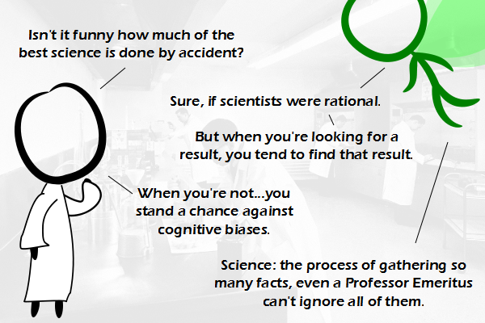

Comic JK 909
When I Feel Like It
⇤
<
?
>
⇥

⇤
<
?
>
⇥
Forum
.
RSS
.
Digg
.
Facebook
.
Reddit
.
Twitter
.
Stumbleupon
Enter your thoughts on number 909 here. Please, lots of spamming, trolling, phreaking and SCIENCE!!! good one, the Professor Emeritus part, though. Best short definition of human sience > just realised the scientists in the background �SPOILER!ALERT >>Who are the scientists in the background? [citations needed] for "best science" and "by accident" >It was from such an unlikely beginning as an unwanted fungus accidentally growing on a sterile plate that Sir Alexander Fleming gave the world penicillin. James Watt watched an ordinary household kettle boiling and conceived the potentiality of steam power. Would Albert Einstein ever have hit upon the theory of relativity if he hadn't been clever? All these tremendous leaps forward have been taken in the dark. Would Rutherford ever have split the atom if he hadn't tried? Could Marconi have invented the radio if he hadn't by pure chance spent years working at the problem?... (Sorry, I had to) >> You missed Albert Hoffman. Best. Accidental. Science. Ever. >>>+1 > Sorry, but Heron of Alexandria knew about that whole steam thing before Watt. He only liked spinning metal orbs. Oh, and he was all over alternative energy, too. >>>but most of those are *not* actually valid answers to the question: for instance, Einstein spent years *aiming* to reconcile Newton and Maxwell - SR and GR were the result of long periods of time thinking, and not "an accident"... Fleming noticed the mould, but it was *others* who actually did the rigorous science: he initially abandoned work as he believed Penicillin would not last long enough in the human body to actually be effective... James Watt - contrary to the myth - did *not* invent the steam engine: Newcomen's steam engine was already in use for such activities as pumping water out of mines... >>...Are these amazing breakthroughs ever achieved except by years and years of unremitting study? Of course not. What I said earlier about accidental discoveries must have been wrong. >>>well you stated specific examples, claiming them to be "accidental", but they were all from the category "years and years of effort"... so still [citation needed] for the specific statement in the comic "much of the best science is done by accident"... most of the generally claimed "accidents" seem to be a myth, and were actually "years of effort"... two examples that I think may be more apt are Dirac's discovery of antimatter, and Planck's discovery of the quantum, both of which fell out of the equations unexpectedly, as it were... so, not "much of", rather "a small minority of" ? >>>>IT WAS A PONTY MYTON REFERENCE. >>>>>I know it was... but I panicked... :| Is that your mother in the background? Is she doing what I think she's doing? OMG, she is! Gross! SUNDJJAJ28837278:)$2:'ksmixsismidmksmksmisskmsk INFINITE CHEAP ENERGY